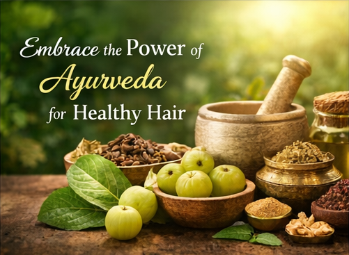

Natural Solutions for Hair Fall
Herbal treatments that restore volume and support healthy regrowth.
Your Ayurvedic Hair Care Companion
Ayurveda ke anusar baal hamare swasthya ka darpan hote hain. Kesh Sakhi har vyakti ke baalon ki prakriti aur condition ke anusar customized Ayurvedic tips aur natural treatments pradan karti hai. Hamara uddeshya prakritik tareeke se baalon ko majboot, ghana aur swasth banana hai. 🌿 Prakriti ke saath baalon ki sachi dost.
Book Consultation
Herbal treatments that restore volume and support healthy regrowth.
Scalp nourishment, balance, and strength from root to tip.
Personalized Ayurvedic guidance based on your hair dosha and condition.
Kesh Sakhi is your trusted companion for achieving healthy, beautiful hair through the ancient wisdom of Ayurveda. We provide personalized consultations and treatments tailored to your unique hair needs.
Harness the power of nature's remedies for long-lasting results.
Address root causes rather than just symptoms.
Get treatments customized to your dosha and hair type.
Ayurveda is an ancient Indian system of holistic medicine that has been practiced for over 5,000 years. In Ayurveda, hair health is directly connected to overall wellness and the balance of your doshas (Vata, Pitta, and Kapha). Kesh Sakhi uses Ayurvedic principles to provide natural, personalized treatments that address the root causes of hair problems rather than just the symptoms.
Results vary depending on your specific condition and consistency with treatment. Most clients see noticeable improvements within 4-6 weeks of following the prescribed Ayurvedic regimen. For hair growth and more substantial changes, it typically takes 8-12 weeks. The key is patience and consistency with natural remedies.
In Ayurveda, hair fall is often caused by an imbalance in Pitta dosha, which is associated with heat and inflammation. Other causes include Vata imbalance (dryness), nutritional deficiencies, stress, poor digestion, and weak agni (digestive fire). Our experts identify your specific dosha imbalance and recommend personalized treatments to restore balance and strengthen hair roots.
We use pure, organic Ayurvedic herbs and oils including Brahmi, Bhringraj, Neem, Coconut oil, Sesame oil, Amla, Hibiscus, and many others. Each ingredient is carefully selected based on your dosha type and specific hair condition. All our products are 100% natural, chemical-free, and sourced from trusted suppliers.